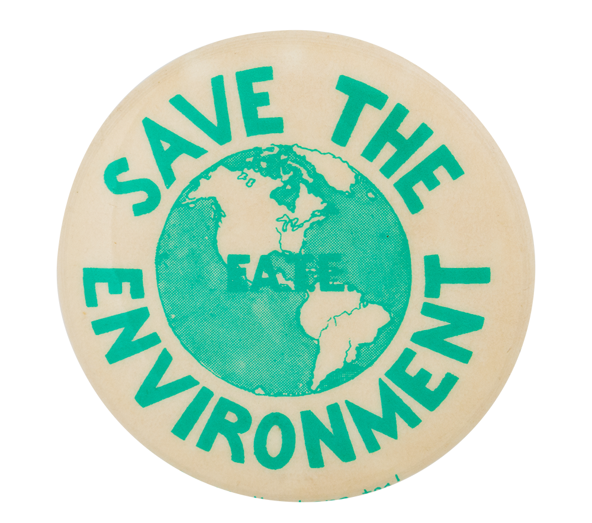

Saving Earth
How to save the planet in a...
About donating:
What do you do with your unwanted clothes?, a lot of people will say that they donate their clothes, but you need to find the right place to donate them to.
~ Here are a few places you can donate your clothing ~
Big brothers Big sisters
BBBS is an organization in America, that does so much to change the lives of children and build stronger communities. Because BBBS does so much, I will be only writing on their part in donation.
BBBS has a system where you can simply schedule a pickup right in front of your door. It's also free! This shows just how easy it is to do a good deed. BBBS does many other things that make the overall world a
better place. If we, our selves can't take the steps to a better future than whow will?
Other places you can donate/recycle clothing to:
- Goodwill- lot's of people use Goodwill to donate their clothes. Like any other clothing donation
Goodwill has certain restrictions of what you can and cannot donate to them, but they're pretty standard.
if you are wanting good person points, they allow you to do volunteer work :)
- Thread-up- is a website where you can both sell clothes on and thrift the cheap clothing being sold. Many poeple
say that this is their favorite method of getting rid of clothes they no longer want, because you make money on the clothing
you're giving away. It sounds bad to sell clothes when you could be giving them away, but it's better than throwing them away. Though a con of
this method is having to ship the clothing to others yourself
- Depop- Depop is very much like thread-up and has the same idea of being able to buy and sell clothes
- Salvation army- This is another place lot's of people donate to and is much like Goodwill.
- Vietname Verterans of America
- St. Vincent de Paul
- Project G.L.A.M- This website I absolutely love, because it not only let's you donate clothes but specifically
prom dresses and accsessories for girls needing them to go to senior prom. You can also donate make-up and money to these girls(no shoes).
Project glam has outfitted over 14,000 young men and women in need for prom glam.
There are many upcoming makeup brands that use natural and organic ingredients and don't do
animal testing for their products, collaborate in some campaigns and participate in charitable givings
- Lush- This is a place I personally really like because not only are their face masks, make-up, and bath-bombs really good but
all of their products have natural and organic ingredients in them. They are also very avid fighters against animal testing
- Elate- Toxic free, vegan, cruelty free, sustainable products
- RMS- Healthy, clean beauty, that has zero toxic chemicals and heavy metals.
- Kosas- Clean, non-toxic beauty
- Ilia- Safe, clean, effective, make-up and skin-care
- Burts bees
- Thrive
- Peek Beauty
- Fenty Beauty
